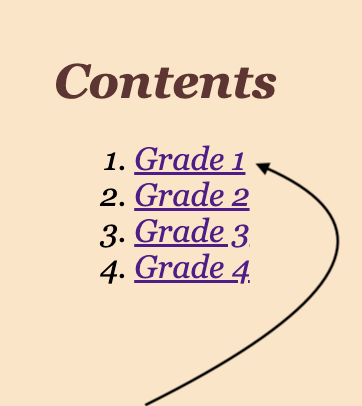
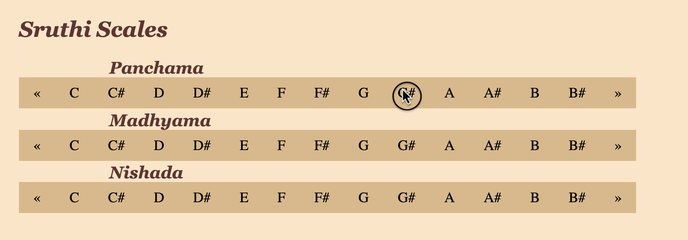
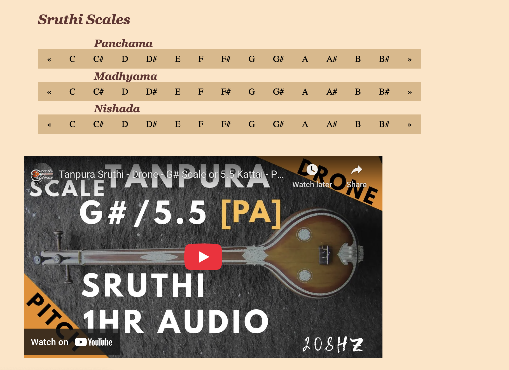
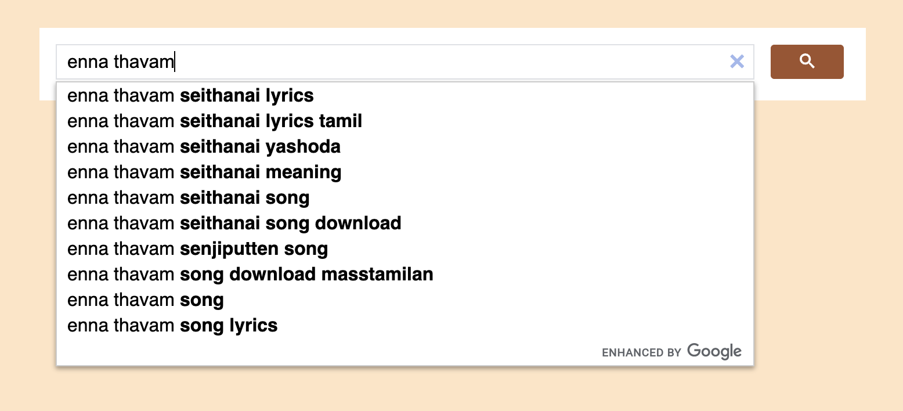
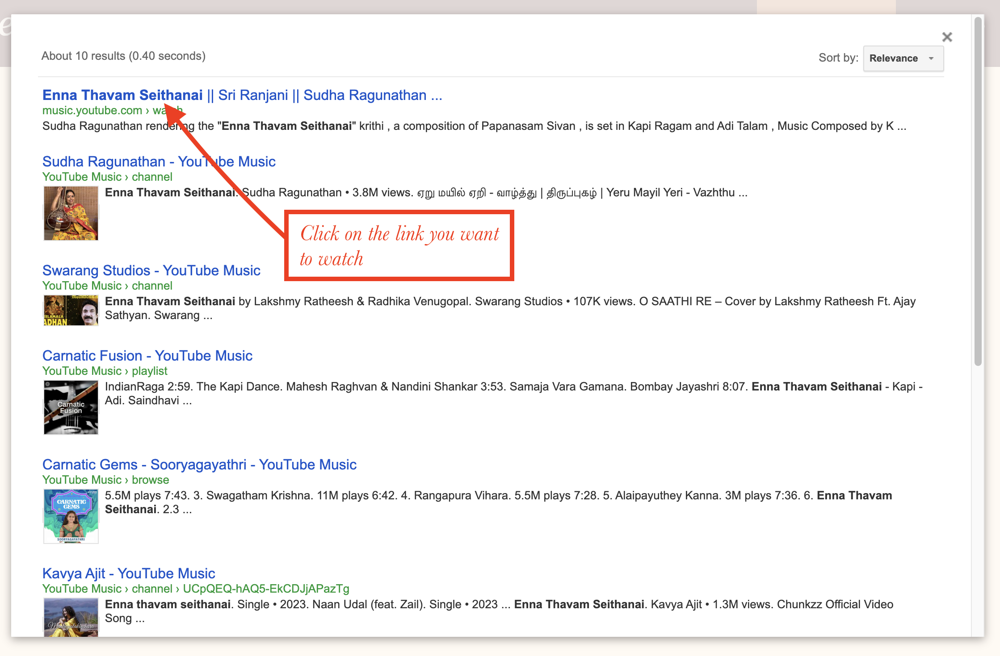

Hi! Welcome to the Carnatic Archive! This website is made to aide you in your Carnatic Music learning journey. Each tab has a specific use that aims to help you learn new songs. Revisit this page if you have any questions! Hope you have an amazing experience with the Carnatic Archive. Thank you for visiting this website!
The Theory Page has the theory you are required to learn to take the Grade Exams from the various Music Institutes in India. These include definitions for basic terms such as Sruthi, Talam and Swaram as well as the biography of famous composers such as Thyagaraja and Swathi Thirunal.
The content of the Theory Page is based on the Curriculum of the Vocal Grade Exam from the Tamil Nadu Dr. J Jayalalithaa Music and Fine Arts University
Click on the Grade Level to be navigated to that section.
The Sruthi Page lets you choose play your Sruthi so that you don't have to play it or search for it on another device or website.
Choose the Scale you want to sing at.
Choose the video that has the right Sruthi for you.
The Videos Page let's you search up any song you want to listen to or learn. Search for the song you want to listen to in the search box and click on the video that's the song you're listening to. Listen to it as many times you want. And you can save the song to your profile so that you can access it quickly!
Search for the song you want to listen to and find it on Youtube or Youtube Music.
The Lyrics Page is similar to the Videos Page in that you can search up the lyrics/Sahithyam of the song you want. And you can also save the lyrics to your profile to access it quickly!
Search for the song lyrics you want to read.
Similar to the video page, click on the link of the lyrics you want to read.